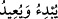

olan bir gezegen biçiminde yarattı. Öte yandan ilm-i ezelisinde ışığını söndürecek ve
aya dönüştürecek olduğunu ise büyüklük itibariyle güneşten daha küçük yarattı.
Fakat gökte, bizden çok uzak ve yüksekte olduklarından küçük görünüyorlar. Şâyet
Allah Teâlâ güneşi ve ayı ilk yarattığı gibi bıraksıydı gece ile gündüz, gündüz ile gece
birbirinden ayırd edilemeyecekti. Ücretle çalışan kişi ne zaman çalışacağını, ücretini
ne zaman alacağını bilemeyecekti. Oruç tutan ne zaman oruç tutup ne zaman iftar
edeceğini anlamayacaktı. Kadın ne zamandan ne zamana kadar iddet bekleyeceğini
bilemeyecekti. Müslümanlar ne zaman namaz kılacaklarını, ne zaman hacca
gideceklerini bilemeyeceklerdi. Allah Teâlâ kullarının menfaat ve maslahatını çok
daha iyi gözetmekte ve onlara çok merhamet etmektedir. Bundan dolayı Cebrail’i
göndermiş ve kanadını ayın yüzüne sürmesini emretmiştir. Cebrail kanadını aya
sürünce ayın ışığı söndürülmüş ve orada sadece nur kalmıştır.
Yüce Allah bu olaya şöyle temas eder:
«Biz geceyle gündüzü iki âyet (nişane) kıldık da gece âyetini silip (giderip) yerine
eşyâyı gösterici gündüz âyetini getirdik. Tâ ki Rabbinizden bir lutuf ve inâyet
arayasınız, yılların sayısını, hesabını bilesiniz. İşte biz herşeyi gereği gibi anlattık.»
(el-İsrâ, 17/12) Ayın yüzeyinde görmüş olduğunuz karaltılar yol benzeri bir takım
çizgiler olup ayın ışığının söndürülmesinden kalmış izlerdir.
Kıyâmet kopup Allah Teâlâ insanlar arasında hüküm verip, cennetliklerle
cehennemlikleri
birbirinden
ayırdığında
ve
henüz
cennetlikler
cennete,
cehennemlikler cehenneme girmemiş iken Allah Teâlâ güneşi ve ayı çağırır. Her ikisi
kapkara bir biçimde dürülmüş olarak getirilirler. O günün dehşetinden ve Rahmanın
korkusundan omuzları tirtir titrer bir halde sarsılmış olarak Rahmanın huzurunda
dururlar. Tam arşın hizasına vardıklarında Allah Teâlâ’ya secdeye kapanırlar, sonra
şöyle derler:
«Ey ilâhımız dünya hayatı esnasında sana olan tâatımızı, sana ibâdetteki
hareketimizi vermiş olduğun emre ne derece süratle koştuğumuzu biliyorsun.
Müşrikler bize ibâdet etti diye, bize azap etme. Sen biliyorsun ki biz onları bize
ibâdet etmeye çağırmadık. Sana ibâdet etmekten gaflete düşmedik.» Bu ifâdeler
üzerine Allah Teâlâ şöyle buyurur: «Sizler doğru söylediniz. Ben kendi nefsime
yaratmayı ilk başlatan ve sonra yeniden döndüren olacağıma dâir söz verdim. Şimdi
ben ikinizi yaratmayı başlattığım noktaya döndüreceğim. Haydi sizi yarattığım
nesneye geri dönün.» Ay ile güneş bu emre karşılık: «Ey Rabbimiz! Sen bizi hangi
şeyden yarattın?” diye sorarlar. Allah: «Sizi arşımın nurundan yarattım. Haydi ona
dönün» der.
Peygamber Efendimiz şöyle devam eder: “Ay ve güneşten bir şimşek çakması gibi
ışık belirir. Bu ışık nerdeyse parlaklığından dolayı gözleri alacaktır ve sonra ay ile
güneş arşın nuruna katılırlar. İşte Allah Teâlâ’nın «
/O Allah ilk olarak
yaratan ve geri döndürendir» (el-Buruc, 85/13) âyet-i kerîmesinin mânâsı budur.”
Nitekim Keşfu’l-esrâr’da böyle kayıtlıdır.